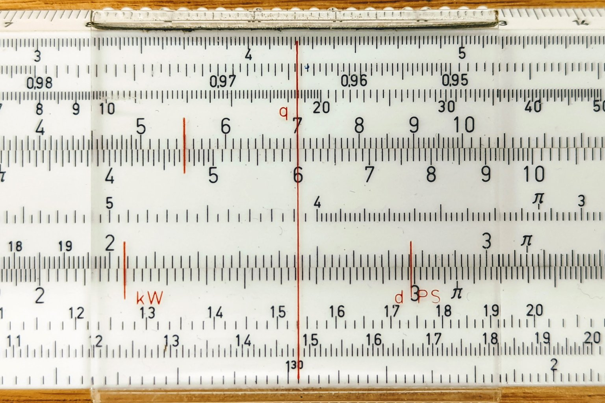

Der Beleihungsauslauf ist das Verhältnis zwischen der Höhe Ihres Darlehens und dem Beleihungswert der Immobilie. Er ist die wichtigste einzelne Größe für Ihren Zinssatz: Je höher der Beleihungsauslauf, desto höher das Risiko der Bank und desto teurer das Darlehen. Bei einer 100- oder 110-Prozent-Finanzierung liegt er fast immer über 100 Prozent, weil der Beleihungswert unter dem Kaufpreis liegt.
Das Wichtigste in Kürze
- Beleihungsauslauf = Darlehen ÷ Beleihungswert. Der Beleihungswert liegt meist 10 bis 20 Prozent unter dem Kaufpreis.
- Schon eine 100-Prozent-Finanzierung führt deshalb zu einem Beleihungsauslauf über 100 Prozent. Mehr als 120 Prozent finanziert kaum eine Bank.
- Im Beispiel kostet die 110-Prozent-Variante 658 Euro mehr im Monat als eine Finanzierung mit 80 Prozent.
Eine Wohnung für 200.000 €, drei Finanzierungen
Beleihungsauslauf, Eigenkapital und Monatsrate. Beleihungswert 180.000 €, Kaufnebenkosten 23.140 €, jeweils 2 % anfängliche Tilgung.
Beleihungsauslauf
mehr als 120 % finanziert kaum eine Bank
Beispielrechnung mit Beispielzinsen, keine aktuellen Konditionen. · Eigenkapital bei 100 %: 23.140 €, bei 110 %: 0 € · Grafik: Fischer & Geserich
Beleihungswert, Kaufpreis und Marktwert sind drei verschiedene Zahlen
Wer eine Wohnung für 200.000 Euro kauft, geht meistens davon aus, dass die Bank mit diesen 200.000 Euro rechnet. Die Bank setzt aber einen eigenen, vorsichtigeren Wert an.
Dieser Wert heißt Beleihungswert. Er gibt an, welchen Betrag die Bank sicher erzielen würde, wenn der Kreditnehmer ausfällt und die Immobilie zwangsversteigert werden muss. Die Bank zieht vom Kaufpreis oder Marktwert einen Sicherheitsabschlag ab, der je nach Objekt, Lage und Bank in der Regel bei 10 bis 20 Prozent liegt. Ausgangspunkt ist der Betrag, der auf Dauer und unabhängig von kurzfristigen Preisschwankungen erzielbar ist.
Der Kaufpreis ist das, was Sie mit dem Verkäufer vereinbart haben. Der Marktwert ist das, was am Stichtag am Markt erzielbar wäre. Beide können über dem Beleihungswert liegen, und in angespannten Märkten tun sie das regelmäßig.
Wie wird der Beleihungsauslauf berechnet?

Die Formel lautet:
Beleihungsauslauf = Darlehensbetrag ÷ Beleihungswert × 100
Ein Darlehen von 160.000 Euro bei einem Beleihungswert von 180.000 Euro ergibt einen Beleihungsauslauf von 88,9 Prozent.
Im internationalen Sprachgebrauch begegnet Ihnen häufig der verwandte Begriff Loan-to-Value (LTV). Der LTV bezieht sich meist auf den Marktwert oder Kaufpreis, der Beleihungsauslauf auf den vorsichtigeren Beleihungswert. Bei derselben Finanzierung fällt der Beleihungsauslauf deshalb höher aus.
Warum der Beleihungsauslauf Ihren Zins bestimmt
Zins ist der Preis, den eine Bank für ihr Risiko verlangt. Banken ordnen Finanzierungen deshalb in Stufen ein, etwa bis 60 Prozent, bis 80 Prozent, bis 90 Prozent, bis 100 Prozent und darüber. Mit jeder Stufe steigt der Zinsaufschlag, weil im Ernstfall ein größerer Teil des Darlehens nicht durch den sicheren Wert der Immobilie gedeckt ist.
Die genauen Grenzen und Aufschläge unterscheiden sich von Bank zu Bank. Die Logik dahinter ist überall dieselbe. Oberhalb von 100 Prozent wird es deutlich teurer. Mehr als 120 Prozent finanziert kaum eine Bank, und wenn, dann nur in Sonderfällen und bei sehr starker Bonität.
Was „100 Prozent“ und „110 Prozent“ bedeuten
Beide Begriffe beziehen sich auf den Kaufpreis, der Beleihungsauslauf dagegen auf den Beleihungswert. Deshalb sind sie ungenau.
- 100-Prozent-Finanzierung: Die Bank finanziert den vollen Kaufpreis. Die Kaufnebenkosten, also Grunderwerbsteuer, Notar, Grundbuch und gegebenenfalls Maklerprovision, zahlen Sie aus Eigenkapital.
- 110-Prozent-Finanzierung: Die Bank finanziert zusätzlich die Kaufnebenkosten. Sie bringen kein Eigenkapital ein.
Weil der Beleihungswert unter dem Kaufpreis liegt, ergibt schon eine 100-Prozent-Finanzierung einen Beleihungsauslauf über 100 Prozent. Die Bezeichnung „110 Prozent“ unterschätzt das tatsächliche Risiko aus Sicht der Bank also systematisch.
Rechenbeispiel: dieselbe Wohnung, drei Finanzierungen
Eine Eigentumswohnung in Berlin mit 38 Quadratmetern Wohnfläche kostet 200.000 Euro, rund 5.260 Euro pro Quadratmeter. Das entspricht etwa dem Berliner Durchschnitt für Bestandswohnungen. Die Kaufnebenkosten setzen sich so zusammen:
| Position | Satz | Betrag |
|---|---|---|
| Grunderwerbsteuer Berlin | 6,0 % | 12.000 € |
| Notar und Grundbuch | ca. 2,0 % | 4.000 € |
| Maklerprovision (Käuferanteil) | 3,57 % | 7.140 € |
| Kaufnebenkosten gesamt | 11,57 % | 23.140 € |
Die Bank setzt den Beleihungswert mit 90 Prozent des Kaufpreises an, also mit 180.000 Euro. Die Zinssätze in der folgenden Tabelle sind Beispielzinsen zur Veranschaulichung, keine aktuellen Konditionen. Gerechnet wird jeweils mit 2 Prozent anfänglicher Tilgung.
| 80 % Finanzierung | 100 % Finanzierung | 110 % Finanzierung | |
|---|---|---|---|
| Eigenkapital | 63.140 € | 23.140 € | 0 € |
| Darlehen | 160.000 € | 200.000 € | 223.140 € |
| Beleihungsauslauf | 88,9 % | 111,1 % | 124,0 % |
| Beispielzins | 4,0 % | 4,4 % | nicht in einem Darlehen darstellbar |
| Monatsrate | 800,00 € | 1.066,67 € | 1.458,01 € (siehe unten) |
| Zinsanteil der ersten Rate | 533,33 € | 733,33 € | 994,63 € |
Die dritte Spalte zeigt das eigentliche Problem. Mit 124 Prozent liegt der Beleihungsauslauf über der Grenze, bis zu der Banken in der Regel mitgehen. Praktisch bleibt dann nur, den Kaufpreis über die Bank zu finanzieren und die Kaufnebenkosten über ein separates Blankodarlehen. Im Beispiel sind das 200.000 Euro Immobiliendarlehen zu 5,1 Prozent mit einer Rate von 1.183,33 Euro. Dazu kommen 23.140 Euro Blankodarlehen zu 7,5 Prozent über zehn Jahre mit einer Rate von 274,68 Euro.
Für dieselbe Wohnung zahlen Sie damit 658 Euro mehr im Monat als bei der 80-Prozent-Variante. Ein Teil davon ist Tilgung, also Vermögensaufbau. Der Zinsanteil allein liegt aber schon in der ersten Rate um 461 Euro höher, und das ist reiner Aufwand.
Warum eine 110-Prozent-Finanzierung den nächsten Kauf blockiert
Die höhere Rate sieht man sofort. Weniger sichtbar ist, was diese Finanzierung für Ihren nächsten Kauf bedeutet.
Jede Bank prüft vor einer Zusage Ihre gesamte Verschuldung und Ihren monatlichen Spielraum. Wer die erste Wohnung mit 110 Prozent finanziert, hat danach eine hohe Zinslast, eine Schuldenstruktur ohne Puffer und häufig zusätzlich einen Verbraucherkredit in der Schufa. Für eine zweite Immobilie sind Sie damit bei den meisten Banken nicht mehr finanzierbar. Aus dieser Lage kommen Sie nur über deutlich steigende Mieten oder ein deutlich höheres Nettoeinkommen heraus. Beides gelingt selten schnell. Damit fehlt der Effekt, für den die meisten überhaupt in Immobilien investieren: dass jedes Objekt das nächste möglich macht.
Aus unserer Praxis. Ein Kunde wollte eine Wohnung kaufen, die bereits sehr knapp bewertet war, und kein Eigenkapital einsetzen. Allein für den Kaufpreis, ohne Nebenkosten, lag der Beleihungsauslauf bei 110 Prozent. Zehn Banken haben abgelehnt. Wir haben dem Kunden dann gesagt, dass diese Konstruktion keinen Sinn ergibt, statt die eine Bank zu suchen, die sie vielleicht doch finanziert hätte.
Wann ergibt eine hohe Finanzierung trotzdem Sinn?
Ob ein hoher Beleihungsauslauf sinnvoll ist, hängt davon ab, wer ihn wann nutzt.
Sinnvoll wird er, wenn bereits ein Bestand da ist. Manche Käufer besitzen drei oder vier Wohnungen, von denen ein Teil positiven Cashflow liefert, und haben Erfahrung mit Vermietung und Finanzierung. Eine Bank schätzt sie ganz anders ein als jemanden, der seine erste Wohnung kauft. Dieselbe Anfrage bekommt dann eine andere Antwort. Voraussetzung ist außerdem eine starke Bonität, in der Regel ab etwa 4.000 Euro netto im Monat aus einem Angestelltenverhältnis oder einem Geschäftsführergehalt.
Bei Mehrfamilienhäusern gelten eigene Regeln. Dort ist das Volumen größer, der Verhandlungsspielraum beim Kaufpreis ebenfalls, und Banken bewerten diese Objektklasse anders als eine einzelne Eigentumswohnung.
„Ich würde niemals jemandem empfehlen, bei der ersten Immobilie eine 110-Prozent-Finanzierung zu machen. Man braucht ein ausgeglichenes Portfolio, auch ein ausgeglichenes Schuldenportfolio.“
Die Einschätzung von Fischer & Geserich
Bei der ersten Immobilie raten wir von einer 110-Prozent-Finanzierung ab. Wer gleich am Anfang den höchsten Hebel zieht, nimmt sich den Spielraum für die nächsten Käufe. Realistisch ist der Einstieg ab etwa 10.000 Euro Eigenkapital, womit sich eine Wohnung um 100.000 Euro darstellen lässt. Bei größeren Wohnungen sollten mindestens die Kaufnebenkosten aus Eigenkapital kommen.
Den Hebel ziehen wir mit unseren Kunden dann, wenn er trägt. Finanzierungen ohne Eigenkapital setzen wir im Einzelfall um, wenn Bonität und Objekt es hergeben. Wir bewerben sie nicht, weil sie für die meisten Käufer die falsche Entscheidung sind.
Häufige Fragen
Was ist der Beleihungsauslauf?
Der Beleihungsauslauf ist das Verhältnis zwischen Darlehensbetrag und Beleihungswert einer Immobilie, ausgedrückt in Prozent. Der Beleihungswert ist der Betrag, den die Bank im Fall einer Zwangsversteigerung sicher erzielen würde, und liegt in der Regel 10 bis 20 Prozent unter dem Kaufpreis. Je höher der Beleihungsauslauf, desto höher der Zinssatz.
Wie hoch darf der Beleihungsauslauf maximal sein?
Die meisten Banken finanzieren bis zu einem Beleihungsauslauf von rund 100 bis 110 Prozent. Mehr als 120 Prozent gehen nur sehr wenige Banken mit, und auch dann nur im Sonderfall bei starker Bonität. Ab 100 Prozent steigen die Zinsaufschläge deutlich.
Was ist der Unterschied zwischen einer 100- und einer 110-Prozent-Finanzierung?
Bei einer 100-Prozent-Finanzierung finanziert die Bank den vollen Kaufpreis, die Kaufnebenkosten zahlen Sie aus Eigenkapital. Bei einer 110-Prozent-Finanzierung finanziert die Bank zusätzlich die Kaufnebenkosten. Weil der Beleihungswert unter dem Kaufpreis liegt, ergibt schon eine 100-Prozent-Finanzierung einen Beleihungsauslauf über 100 Prozent.
Ist eine 110-Prozent-Finanzierung bei der ersten Immobilie sinnvoll?
In der Regel nicht. Die hohe Zinsbelastung und die fehlende Reserve führen dazu, dass viele Käufer danach für eine zweite Immobilie nicht mehr finanzierbar sind. Fischer & Geserich empfiehlt den hohen Hebel erst, wenn bereits mehrere Objekte im Bestand sind und die Bonität stark ist, in der Regel ab etwa 4.000 Euro netto im Monat.
Das Titelbild und die Bilder ohne Fotonachweis wurden mit KI erstellt.
Der Beitrag dient der allgemeinen Information und ersetzt keine Rechts-, Steuer-, Finanzierungs- oder Anlageberatung. Zinssätze in Beispielrechnungen sind Beispielwerte, keine aktuellen Konditionen.